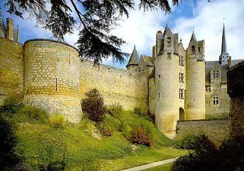

В XI веке замок представлял собой большой донжон, окруженный водяными рвами и двойной крепостной стеной, защищенной барбаканами. Это фортификационное устройство оказалось действенным в 1150 году во время осады замка Жоффруа Плантагенетом, королем Англии. 
Семья Дю Белле, особенно Жиро, противостояли графам Анжуйским, их сюзеренам, которые в ответ на это разорили долину Туе и взяли замок в осаду. В течение нескольких месяцев, невзирая на то, что крепостная стена была разрушена, замок оставался неприступным. Осажденные укрылись в главном донжоне и смогли продержаться долгое время, так как в их распоряжении были мельница, колодец и печь. Кроме того, подземные галереи позволяли Дю Белле иметь сообщение с фортом Ла Мот-Бурбон. Другой проход, существование которого в настоящее время ставится под сомнение, связывал замок на западе с аббатством Асньер и проходил под руслом реки Туе.
Победа, одержанная графом Анжуйским, в результате которой донжон был частично уничтожен, сопровождалась зловещими предсказаниями. Кюре из Броссе убедил графа в неминуемости его смерти, и действительно некоторое время спустя, купаясь вблизи Шато-дю-Луар во время сильной летней жары, он схватил лихорадку и через несколько дней скончался. На пороге смерти он отказался от исповеди.